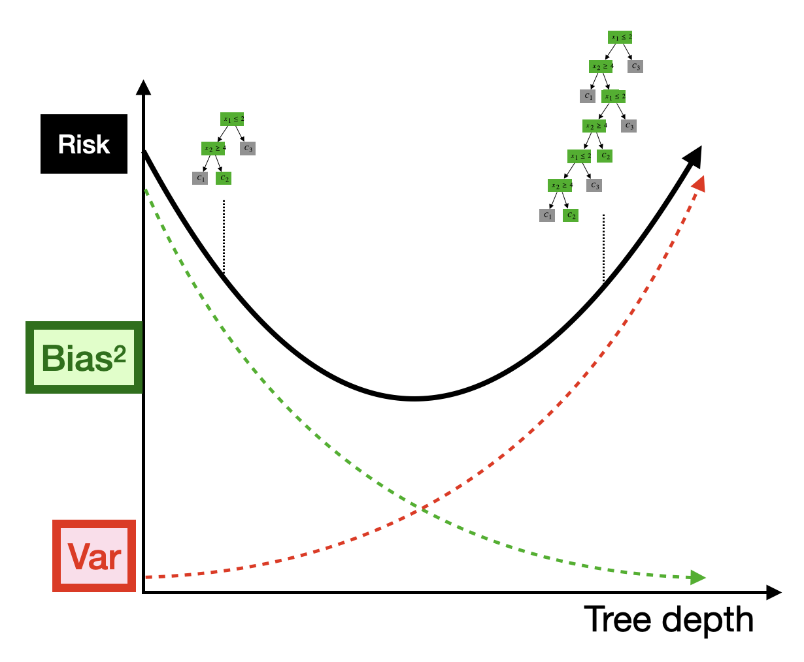
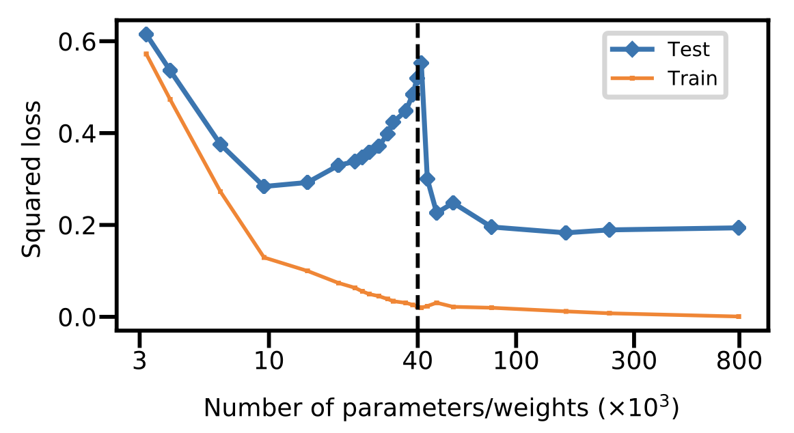
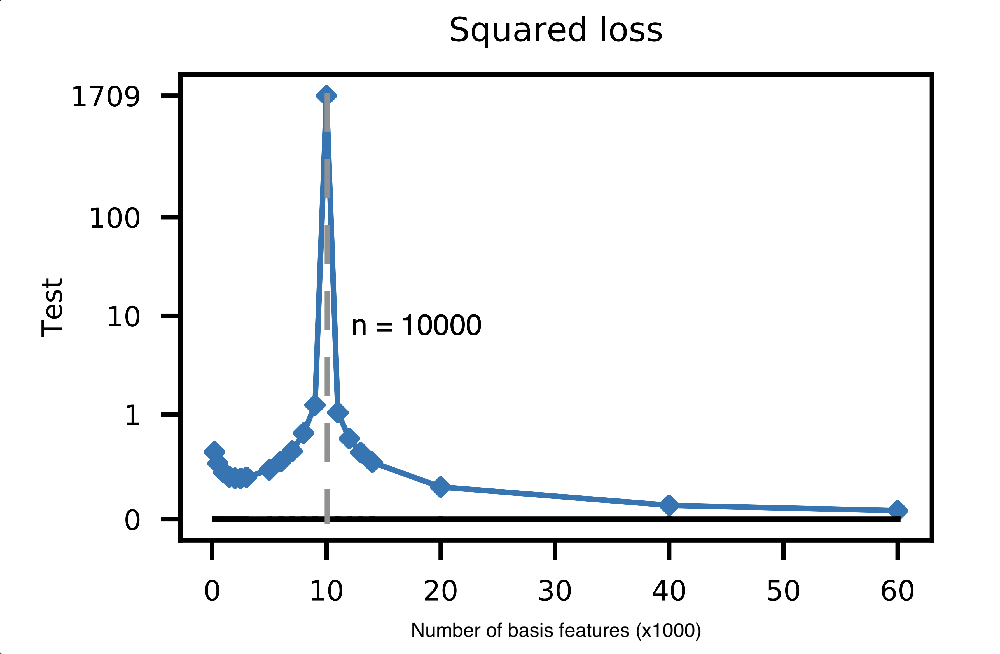
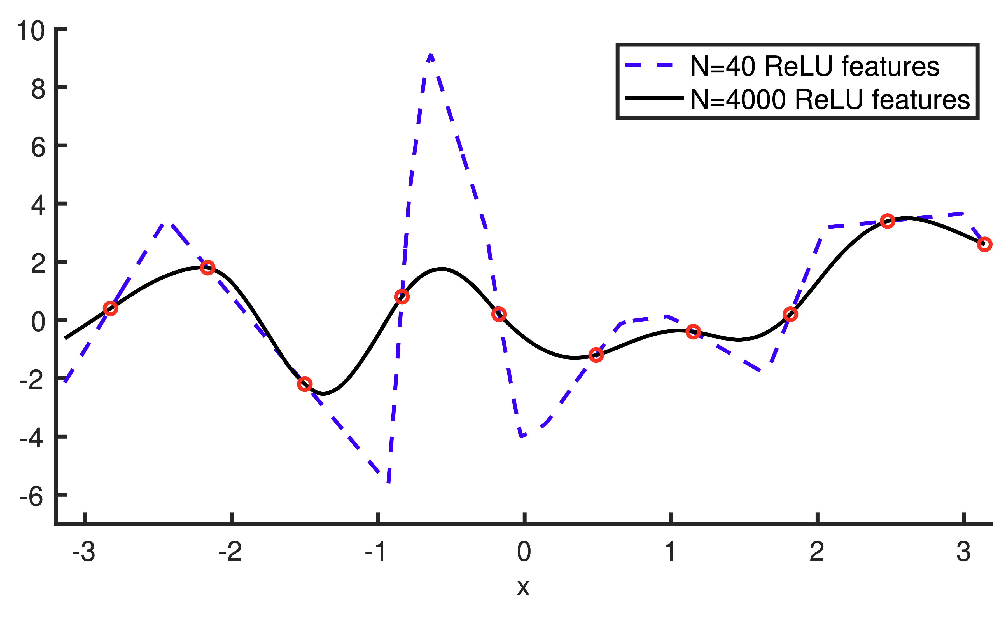
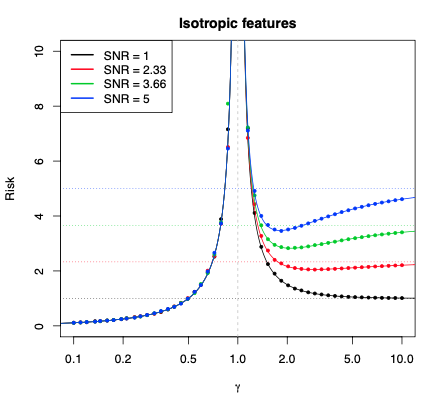

Lecture 20: Neural Network Generalization
Learning Objectives
By the end of this lecture, you should be able to:
- Explain the phenomenon of double descent, and when it occurs in neural networks.
- Identify the key criterion that yields a “classic” bias-variance tradeoff versus double descent.
Motivation
- In the previous lecture, we learned how to train neural networks using gradient descent and backpropagation.
- However, we left a major question unanswered: why do neural networks generalize well to new data?
- We saw part of the answer in the first neural network lecture: they are able to learn hierarchical features that are exponentially more expressive with depth.
- However, this predictive power comes at a cost: neural networks may require many parameters to represent these complex functions, making them susceptible to high variance and overfitting.
- This lecture will explore why neural networks generalize well despite (or perhaps because of) their large number of parameters. It is perhaps one of the most surprising and important discoveries in modern machine learning!
Capacity versus Generalization
Consider a neural network with \(L\) hidden layers, each with \(D\) hidden units.
Recall from the Previous Lecture:
From our discussion of width and depth, we established two key facts about this network:
- Number of piecewise-linear regions: \(O(D^L)\) (exponential in depth!)
- Number of parameters: \(O(D^2 L)\) (quadratic in width, linear in depth)
What This Implies:
These two facts together suggest that:
- Our neural network is capable of learning extremely complicated functions. With \(L\) layers and \(D\) units per layer, we can represent \(O(D^L)\) different piecewise-linear regions, which grows exponentially with depth.
- However, will our network learn the correct function from limited training data? With \(O(D^2 L)\) parameters to learn, and typically \(D^2 L \gg n\) (i.e., more parameters than training examples), we might expect the network to overfit to the training data.
Expected Behavior: Bias/Variance Tradeoff
Recall the bias-variance tradeoff we discussed earlier in the course. For decision trees, we saw that as we increase the depth of the tree (and thus the number of parameters), we observe a characteristic U-shaped curve for the test error:

- When the tree is shallow (few parameters), the model has high bias but low variance.
- When the tree is deep (many parameters), the model has low bias but high variance.
- The optimal depth is somewhere in the middle, where the bias-variance tradeoff is balanced.
Based on this understanding, we would expect a similar bias-variance curve for neural networks as a function of the number of parameters. In particular, we would expect that increasing the number of parameters (either by increasing width or depth) should yield a drop in bias (we can learn a piecewise approximation with more pieces) but an increase in variance (we are more likely to fit noise that is specific to our given training sample).
But this simple tradeoff is not what we observe in practice!
The Surprising Phenomenon: Double Descent
In 2019, researchers discovered a surprising empirical phenomenon that challenges our traditional understanding of the bias-variance tradeoff. When we plot the test error of neural networks as a function of the number of parameters, we observe a double descent curve:

This curve has several surprising features:
- Initially (on the left side of the plot), we observe the expected U-shaped bias-variance curve. As we increase the number of parameters, the test error first decreases (as bias decreases), then increases (as variance increases).
- However, after the number of parameters exceeds the number of training examples (\(n\)), something unexpected happens: the test error decreases again as we continue to add more parameters!
- This creates a “double descent” shape, with two distinct regions where test error decreases.
Implications for Modern Neural Networks
- Many modern neural networks have tons of parameters, often orders of magnitude more than the number of training examples.
- These networks live on the right side of the double descent curve, in the overparameterized regime where adding more parameters actually improves generalization.
- This explains why neural networks can generalize well despite having so many parameters: they are not in the high-variance regime we would expect from classical statistical theory!
- Prior to this discovery, statisticians believed that having more parameters than training examples would always lead to overfitting.
- Since 2019, there has been significant theoretical progress in understanding why double descent occurs, though it remains an active area of research.
Understanding Double Descent: Insights from Basis Regression
To build intuition for why double descent occurs, we will study a much simpler class of models: basis regression (i.e., linear models with basis expansions). Remarkably, the double descent phenomenon is not specific to neural networks—we can observe it in basis regression as well!
Consider a basis regression model with an increasing number of basis functions \(d\). As we increase \(d\) beyond the number of training examples \(n\), we observe the same double descent curve:

Notice that:
The inflection point (where the test error peaks) occurs precisely when the number of basis functions equals the number of training examples: \(d = n\).
This is the point at which our basis regressor, if trained without any ridge or lasso penalty, is able to perfectly fit the training data (i.e., achieve zero training error).
Before this point (\(d < n\)), the model is underparameterized and cannot perfectly fit the training data. In other words, the OLS solution will have a non-zero training error:
\[ \min_{\boldsymbol \beta} \left \Vert \boldsymbol \Phi \boldsymbol \beta - \boldsymbol Y \right\Vert_2^2 > 0. \]
where \(\boldsymbol \Phi \in \mathbb R^{n \times d}\) is the basis expansion matrix for our \(n\) training points.
After this point (\(d > n\)), the model is overparameterized and can perfectly fit the training data, but the test error decreases as we add more basis functions!
Intuition (Hand-Wavy Explanation)
To understand why the test error decreases in the overparameterized regime, let’s think about what happens to the learned parameters \(\boldsymbol \beta\) as we increase the number of basis functions \(d\).
Now consider what happens as we vary the number of basis functions \(d\):
When \(d < n\) (underparameterized regime):
- The model is underparameterized.
- There is no \(\boldsymbol \beta\) that perfectly explains our training responses given our basis-expanded training inputs.
- In other words, even the best possible \(\boldsymbol \beta\) will have non-zero training error: \(\Vert \boldsymbol \Phi \boldsymbol \beta - \boldsymbol Y \Vert > 0\).
- As we increase \(d\) (but still \(d < n\)), we can fit the training data better and better, reducing both bias and training error.
When \(d = n\) (interpolation threshold):
- At this critical point, there exists a value of \(\boldsymbol \beta\) that fits our training data perfectly.
- That is, \(\Vert \boldsymbol \Phi \boldsymbol \beta - \boldsymbol Y \Vert = 0\).
- However, this means we are fitting both the signal (the true underlying relationship) and the noise (random fluctuations in the training data).
- This leads to a high-variance predictor that overfits to the training noise, resulting in poor test performance.
When \(d > n\) (overparameterized regime):
- The model is overparameterized.
- We can still fit the training data (noise + signal) perfectly, but now there are infinitely many solutions that achieve zero training error.
- As we increase \(d\), we have more and more features, which means the noise gets “spread out” over more parameters.
- Since each parameter only captures “some” of the noise (rather than concentrating it in a few parameters), we are less likely to make predictions based on this noise.
- This leads to better generalization performance as \(d\) increases!
This explanation is overly simplified, and there is a lot more at play. In the next section, we’ll provide a slightly more rigorous explanation of what’s happening in the overparameterized regime.
The Role of Minimum Norm Solutions
The key to understanding double descent in the overparameterized regime is recognizing that, when there are infinitely many solutions to our optimization problem, gradient descent converges to a very special solution: the minimum norm solution.
Infinitely Many Solutions
In (unregularized) basis regression, if \(d > n\), then the OLS problem is underdetermined. This means there are infinitely many solutions \(\boldsymbol \beta\) that achieve zero training error (i.e., \(\boldsymbol \Phi \boldsymbol \beta = \boldsymbol Y\)).
The question is: which of these infinitely many solutions does gradient descent find, and which is most likely to generalize well?
Gradient Descent Finds the Minimum Norm Solution
It turns out that, when there are infinitely many solutions to our optimization problem, gradient descent (when initialized at \(\boldsymbol \beta = \boldsymbol 0\)) converges to the minimum norm solution:
\[ \hat{\boldsymbol \beta} = \mathrm{argmin}_{\boldsymbol \beta : \boldsymbol \Phi \boldsymbol \beta = \boldsymbol Y} \Vert \boldsymbol \beta \Vert_2^2, \]
where \(\boldsymbol \Phi \in \mathbb R^{n \times d}\) is our basis expansion matrix.
In other words, gradient descent finds the solution that perfectly fits the training data and has the smallest possible \(\ell_2\) norm among all such solutions.
Visualizing Minimum Norm Solutions
Consider the following figure, which shows two different basis regression models that both interpolate the training data perfectly:

- The “rough” looking solution comes from a basis regressor with 40 features.
- The “smooth” solution comes from a basis regressor with 4000 features.
- Both models interpolate the training data perfectly (i.e., achieve zero training error), but the 4000-feature model produces a much smoother prediction function.
This is because the 4000-feature model has access to more basis functions, allowing it to find a lower-norm solution that still interpolates the training data.
Why Do More Features Lead to Smaller Norms?
We already saw from ridge regression that smaller parameter norms lead to better generalization (lower test error). But why does having more features lead to smaller norms?
The key insight is that basis regression models with different numbers of features are nested models.
- The 40-feature basis regressor is a special case of the 4000-feature basis regressor, where we simply set 3960 of the coefficients to zero.
- Both the 40-feature and 4000-feature models can interpolate the training data (achieve zero training error).
- However, the 4000-feature model is guaranteed to be the minimum-norm interpolator over all 4000-feature linear models.
- Since the 40-feature model is just one of these 4000-feature models (with many coefficients set to zero), the 4000-feature model must have smaller (or equal) norm than the 40-feature model.
- Thus, as we increase the number of features beyond \(n\), we can learn smoother (i.e., lower norm) interpolating solutions, which generalize better.
The Full Theoretical Picture
Double descent and the generalization of neural networks are still extremely active areas of research. However, since the initial characterization of this phenomenon in 2019, there has been significant progress in developing a rigorous theoretical understanding of why it occurs.
Fully understanding the theory would require a whole course in itself (and lots of PhD-level math!), but we can at least glimpse at some of the key theoretical results.
(From Hastie et al., 2020)
\(\gamma = D / N\) (ratio of features / data)
\(\sigma^2 = \mathbb{V}[Y|X]\) (observational noise)
When basis features are uncorrelated, we have (asymptotically)
\[ \begin{aligned} \mathrm{Bias}^2 &= \begin{cases} 0 & \gamma < 1 \text{ (underparam.)} \\ 1 - \tfrac{1}{\gamma} & \gamma \geq 1 \text{ (overparam.)} \end{cases} \\ & \\ \mathrm{Var} &= \begin{cases} \sigma^2 \tfrac{\gamma}{1 - \gamma} & \gamma < 1 \text{ (underparam.)} \\ \sigma^2 \tfrac{1}{\gamma - 1} & \gamma \geq 1 \text{ (overparam.)} \end{cases} \\ \end{aligned} \]

Regularization in the Overparameterized Regime
Now that we understand why neural networks generalize well despite having many parameters, we can revisit other variance reduction techniques that we’ve previously studied to determine whether or not they are necessary.
The most general strategy we’ve studied for variance reduction is regularization, i.e. adding a complexity penalty to our optimization objective (think ridge regression, lasso, etc.).
\[ \mathrm{argmin}_{\boldsymbol W^{(1)}, \ldots, \boldsymbol W^{(L)}, \boldsymbol \beta} \sum_{i=1}^n \ell(y_i, \hat f_\mathrm{NN}(\boldsymbol x_i)) \: + \: \text{complexity penalty} \]
The most common form of regularization for neural networks is weight decay (also called L2 regularization):
\[ \text{complexity penalty} = \frac{\lambda}{2} \left( \Vert \boldsymbol \beta \Vert_2^2 + \sum_{\ell=1}^L \Vert \mathrm{vec} (\boldsymbol W^{(\ell)}) \Vert_2^2 \right), \]
where \(\lambda \geq 0\) is a tuning parameter that controls the strength of the regularization, and \(\mathrm{vec}(\boldsymbol W^{(\ell)})\) denotes the vectorization of the weight matrix \(\boldsymbol W^{(\ell)}\). (This penalty is exactly the same as the ridge regression penalty, but now it’s applied to all weight matrices in the neural network.)
Before we understood double descent (pre-2019):
- We believed that neural networks with many parameters would suffer from high variance.
- Therefore, we thought you needed strong regularization (high \(\lambda\)) to combat this high variance.
- Researchers invented many sophisticated regularization techniques beyond weight decay, such as dropout, pruning, mixup, and many others.
After understanding double descent (post-2019):
- We now understand that overparameterized neural networks do not necessarily have high variance, due to the implicit bias towards low-norm solutions provided by gradient descent.
- Therefore, heavy regularization is no longer considered necessary for good generalization.
- In modern practice, it’s now uncommon to use anything more than light weight decay (small \(\lambda\)), and many state-of-the-art models use little to no explicit regularization at all!
Practical Tips for Using Neural Networks
Now that we understand how neural networks work and why they generalize, here are some practical tips for using them in practice:
When to Use Neural Networks
- Neural networks are best suited for unstructured data types such as images, text, audio, video, etc., though they are best used with slight modifications to the layer architecture that we studied.
- If you have tabular data (i.e., data in a spreadsheet with rows and columns), you’re often better off using other algorithms like random forests or gradient boosting. Neural networks can work on tabular data, but they typically don’t outperform simpler methods.
Transfer Learning is the Default Approach
- Rather than training a neural network from scratch on your dataset, start from a neural network that someone else has pre-trained on a larger dataset. This strategy is often called transfer learning or fine-tuning.
- There are many existing pre-trained models for images, video, text, molecules, and other domains freely available online.
- This strategy enables neural networks to work well even on extremely small datasets (e.g., \(100 \leq n \leq 1000\)), which would be insufficient for training from scratch.
Computational Requirements
- Neural networks are computationally expensive to train.
- They typically won’t run (efficiently) on your laptop; you’ll need access to a GPU cluster to train them in a reasonable time.
- However, once trained, neural networks can often make predictions relatively quickly, even on a CPU.
The Design Space is Huge
- The design space of neural networks is enormous! There are many different architectures, optimizers, regularizers, learning rate schedules, and other hyperparameters to choose from.
- Rather than designing a neural network from scratch, it’s best to start from an existing architecture and codebase that someone has already built for a related problem.
- There’s no shortage of good open-source codebases and pre-trained models available online (e.g., on GitHub, Hugging Face, PyTorch Hub, etc.).
Getting Started
- If you want to play around with neural networks, learn Python and use the PyTorch library!
- PyTorch is the most popular deep learning framework in research, and has excellent documentation and community support.